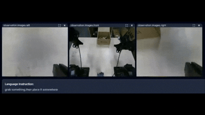

Zekai Lin 林泽锴
I am an undergraduate student in Mechatronic Engineering at South China University of Technology, ranked 1/141 in my major. I will join the University of Science and Technology of China as a master's student in Control Science and Engineering, supervised by Prof. Zhenyu Lu.
My research interests lie in Embodied AI and Robot Dexterous Manipulation, with a focus on generalization and dexterity. I have hands-on experience in the full stack of embodied intelligence: robot hardware design, teleoperation data collection, imitation learning / VLA post-training, and real-robot deployment.
News
Publications

Prior-GA: Few-Shot In-Context Imitation Learning via Prior-Guided Graph Alignment for Robotic Manipulation
Proposed prior-guided graph alignment for few-shot in-context imitation learning, addressing the attention dilution problem caused by low task-relevant point cloud ratio. Achieved RLBench success rate improvement from 27.78% to 72.22% (+44.4pp), with translation error reduced by 75.6% and rotation error by 63.8%.

Embodied Multimodal World Modeling with 4D Scene Graphs for Long-Distance Teleoperation
Proposed a GMM-based keyframe extraction algorithm, improving 4D scene graph construction efficiency by 7×. Designed a coupled hierarchical planning architecture, maintaining high success rates under 0-300s six-level network latency, enabling reliable long-distance teleoperation with minute-level delays.
Research

π0.5 VLA Post-Training & Real-Robot Deployment
Built a full-stack pipeline from teleoperation data collection to real-robot deployment, adapted for Piper / JAKA S5 dual platforms. Developed a dual-arm teleoperation system based on Meta Quest3 VR, achieving 85.8% success rate on RoboTwin benchmark.

Learned Policy Deployment
Deployed learned policies on Piper robot for real-world grasping tasks. Built RGB-D streaming, inference, and control pipelines with ROS2, achieving real-time closed-loop execution.

LeRobot Multi-View Dataset
Constructed a 14-DoF dual-arm state dataset (joint + Cartesian) with three RGB-D views (global + dual wrist), supporting multi-task language-conditioned training.

Zhuhai International Dexterous Manipulation Challenge
Dual JAKA arms + LinkerHand five-fingered dexterous hand system for peg-in-hole and object sorting tasks. Ranked 4th nationally.
More Projects (Click to Expand)

Piper Dual-Arm Teleoperation
Master-slave dual-arm teleoperation data collection system supporting both joint-space and Cartesian-space control modes.

BUAA Autonomous Driving Challenge
Lunar-themed tracked mobile robot with autonomous navigation and manipulation, awarded National Silver Medal.

Vision-Based Line Following
Vision-based track following and target recognition for delivery tasks, core module of the National Intelligent Car Competition.

Hovercraft Racing
Autonomous navigation through roundabouts and intersections, National Intelligent Car Competition hovercraft category.
Awards
| Year | Award | Role |
|---|---|---|
| 2025 | 20th National College Student Intelligent Car Competition · National First Prize (3rd Place) | Team Leader |
| 2025 | 2nd Zhuhai International Dexterous Manipulation Challenge · 4th Place | Core Member |
| 2024 | BUAA Global Innovation Competition Autonomous Driving Challenge · Silver Medal | Core Member |
| 2023 | XBOTCON Infinite Mecha Cup · Second Prize | — |